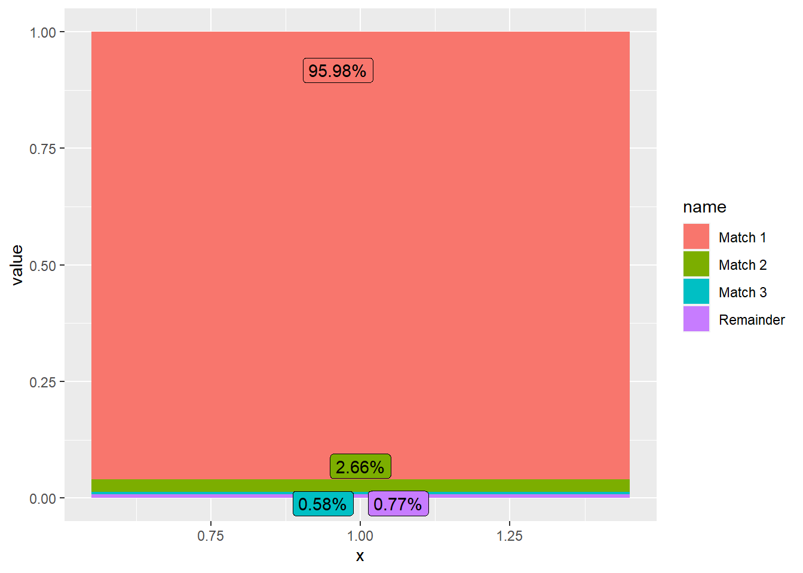

df <- read_rds(here::here("data/augmented/df_1930_augmented.rds"))
df_1930 <- df %>%
# we need only the id and occupation variables
select(id, yrke) %>%
mutate(
# this makes a copy of the original column, that we then modify
yrke_copy = yrke,
yrke = str_to_lower(yrke),
# We create a column for former, indicated by fd. We remove this from the original column.
# we can use this later to improve the hisclass classification
flag_fd = ifelse(str_detect(yrke, "f\\.d\\.|f\\.d|^fd| fd|f d\\.| f\\. d\\.|f\\. d$"),TRUE, FALSE),
yrke = str_remove_all(yrke, "f\\.d\\.|f\\.d|^fd| fd|f d\\.| f\\. d\\.|f\\. d$"),
# flag for only doing the occupation temporarily
flag_fn = ifelse(str_detect(yrke, "f\\.n\\.|f\\. n\\.|f\\. n"),TRUE, FALSE),
yrke = str_remove_all(yrke, "f\\.n\\.|f\\. n\\.|f\\. n"),
# create a column for place of work
yrke_pow = str_extract(yrke, " hos .*| vid .*| i .*| på.*| å .*| h\\. "),
yrke = str_remove_all(yrke, " hos .*| vid .*| i .*| på.*| å .*| h\\. "),
# create a column for former occupation
yrke_f_occ = str_extract(yrke, " f\\..*"),
# tidy up the remaining occpations
yrke = str_remove_all(yrke, " f\\..*"),
yrke = str_remove_all(yrke, " fa da"),
yrke = str_remove_all(yrke, "^fa | fa$| fa "),
yrke = str_remove_all(yrke, "^fada | fada$| fada "),
yrke = str_remove_all(yrke, "^da | da$| da ")
) %>%
mutate(flag_for_multi_occs = ifelse(str_detect(yrke_copy, "f\\.d\\.$|f\\.d$|^fd$| fd$|f d\\.$| f\\. d\\.$|f\\. d$| f\\.$"
) &
str_detect(yrke_copy, " [A-Z].*"), yes = TRUE, no = FALSE
)
) %>%
mutate(
yrke_clean = str_squish(str_remove(yrke, "f\\.d\\.$|f\\.d$|^fd$| fd$|f d\\.$| f\\. d\\.$|f\\. d$| f\\.$")),
yrke_f_occ = case_when(
flag_for_multi_occs == TRUE ~ word(yrke_clean, -1),
TRUE ~ NA_character_
),
yrke = case_when(
flag_for_multi_occs == TRUE ~ str_remove(yrke, " .*"),
TRUE ~ yrke
)
) %>%
select(-yrke_clean) %>%
mutate(
# remove numbers that begin a word
yrke = str_remove_all(yrke, "[0-9]."),
yrke = str_remove_all(yrke, "[:punct:]"),
yrke = str_to_lower(yrke),
yrke = str_squish(yrke)
) %>%
# tidy up funny letters
mutate(yrke_1 = word(yrke, 1))Linking occupatonal hisco form 1910 to 1930
Purpose
This document explains the assignment of hisco and hisclass codes to the Swedish 1930 census.
The process has a few parts.
What we want
We want to assign each record in the 1930 census to a social class and and occupational class so that they are easier to work with.
We want at the end of this process to save a file with each of the 1930 census observations and a hisco and hisclass.
The intermediately generated varibles (cleaned up titles etc.) will be available as an auxiliary file.
(One thing that could follow later is to try and assign status and relation variables along with the hisco codes)
What we have
We have only the occupational title.
Process
We can use this title to assign an occupational hisco (used in the Swedish censuses from 1880 to 1910 by IPUMS International), then map across to a hisco code, and then a hisclass variable.
I want to make a diagram here that shows the process
The diagram will have a sankey structure.
I’m going to put all of the code in this one document, even if it is not executed on compiling.
Data sources
The first source of data is the 1930 Swedish census. This is as yet incompletely digitized, but is available fom Riksarkivet.
The second source of data is the 1910 Swedish census. It will be used as a source of occupational strings and occupational hisco codes.
The third is a crosswalk between occupational hisco (used in the Swedish censuses) and hisco (from which we can assign hisclass).
The fourth is a crosswalk between hisco and hisclass.
Process
Ingest 1930 occupations
The first thing we are going to do is get in the 1930 census data and clean it up so that we can match across to the 1910 census data.
Clean up 1910 census data
library(ipumsr)
df_1910 <- ipumsr::read_ipums_micro(
ddi = here::here("data/ipums/ipumsi_00006.xml"),
data_file = here::here("data/ipums/ipumsi_00006.dat.gz")
)
df_1910 <- df_1910 %>%
filter(YEAR == 1910)
df_1910 <- df_1910 %>%
select(OCCHISCO, OCCSTRNG) %>%
mutate(occ_hisco = as.numeric(OCCHISCO)) %>%
select(occ_hisco, yrke = OCCSTRNG)
df_1910 <- df_1910 %>%
mutate(
# this makes a copy of the original column, that we then modify
yrke_copy = yrke,
yrke = str_to_lower(yrke),
# We create a column for former, indicated by fd. We remove this from the original column.
# we can use this later to improve the hisclass classification
flag_fd = ifelse(str_detect(yrke, "f\\.d\\.|f\\.d|^fd| fd|f d\\.| f\\. d\\.|f\\. d$"),TRUE, FALSE),
yrke = str_remove_all(yrke, "f\\.d\\.|f\\.d|^fd| fd|f d\\.| f\\. d\\.|f\\. d$"),
# flag for only doing the occupation temporarily
flag_fn = ifelse(str_detect(yrke, "f\\.n\\.|f\\. n\\.|f\\. n"),TRUE, FALSE),
yrke = str_remove_all(yrke, "f\\.n\\.|f\\. n\\.|f\\. n"),
# create a column for place of work
yrke_pow = str_extract(yrke, " hos .*| vid .*| i .*| på.*| å .*| h\\. "),
yrke = str_remove_all(yrke, " hos .*| vid .*| i .*| på.*| å .*| h\\. "),
# create a column for former occupation
yrke_f_occ = str_extract(yrke, " f\\..*"),
# tidy up the remaining occpations
yrke = str_remove_all(yrke, " f\\..*"),
yrke = str_remove_all(yrke, " fa da"),
yrke = str_remove_all(yrke, "^fa | fa$| fa "),
yrke = str_remove_all(yrke, "^fada | fada$| fada "),
yrke = str_remove_all(yrke, "^da | da$| da ")
) %>%
mutate(flag_for_multi_occs = ifelse(str_detect(yrke_copy, "f\\.d\\.$|f\\.d$|^fd$| fd$|f d\\.$| f\\. d\\.$|f\\. d$| f\\.$"
) &
str_detect(yrke_copy, " [A-Z].*"), yes = TRUE, no = FALSE
)
) %>%
mutate(
yrke_clean = str_squish(str_remove(yrke, "f\\.d\\.$|f\\.d$|^fd$| fd$|f d\\.$| f\\. d\\.$|f\\. d$| f\\.$")),
yrke_f_occ = case_when(
flag_for_multi_occs == TRUE ~ word(yrke_clean, -1),
TRUE ~ NA_character_
),
yrke = case_when(
flag_for_multi_occs == TRUE ~ str_remove(yrke, " .*"),
TRUE ~ yrke
)
) %>%
select(-yrke_clean) %>%
mutate(
# remove numbers that begin a word
yrke = str_remove_all(yrke, "[0-9]."),
yrke = str_remove_all(yrke, "[:punct:]"),
yrke = str_to_lower(yrke),
yrke = str_squish(yrke)
) %>%
# tidy up funny letters
mutate(yrke_1 = word(yrke, 1))We want a set of distinct occupations to match against.
Let’s check if there are any instances of one title mapping to multiple occupational hiscos.
df_1910_duplicates <- df_1910 %>%
count(yrke, occ_hisco, sort = T, name = "n_yrke_with_occ_hisco") %>%
add_count(yrke, name = "n_diff_occ_hiscos") %>%
arrange(desc(n_diff_occ_hiscos))| Titles assigned to multiple codes | |||
| The case of gårdsägare | |||
| Title | Code | Number of records with this code | Total different codes for this title |
|---|---|---|---|
| gårdsägare | 61110 | 2661 | 102 |
| gårdsägare | 41010 | 35 | 102 |
| gårdsägare | 95420 | 32 | 102 |
| gårdsägare | 99120 | 15 | 102 |
| gårdsägare | 58410 | 13 | 102 |
| gårdsägare | 99150 | 11 | 102 |
| gårdsägare | 23170 | 10 | 102 |
| gårdsägare | 73200 | 10 | 102 |
| gårdsägare | 95120 | 9 | 102 |
| gårdsägare | 79120 | 8 | 102 |
| gårdsägare | 22120 | 5 | 102 |
| gårdsägare | 99200 | 5 | 102 |
| gårdsägare | 58430 | 4 | 102 |
| gårdsägare | 77610 | 4 | 102 |
| gårdsägare | 80100 | 4 | 102 |
| gårdsägare | 93120 | 4 | 102 |
| gårdsägare | 98510 | 4 | 102 |
| gårdsägare | 14120 | 3 | 102 |
| gårdsägare | 22190 | 3 | 102 |
| gårdsägare | 23120 | 3 | 102 |
So we can see that for the title gårdsägare, there are 2661 instances in the 1910 census of the title being assigned the occupational hisco code 6.111^{4}, for farmer.
In the instances where there are multiple occupational hisco codes assignd to one occupation, we will use a simple rule.
We count the number of records assigned each occupational hisco within each title, take the top code and keep it as the assigned code.
(If the top code is 99999, we can assign it manually later.)
We implement the rule below.
df_1910 <- df_1910_duplicates %>%
group_by(yrke) %>%
arrange(desc(n_yrke_with_occ_hisco)) %>%
mutate(index = row_number()) %>%
ungroup() %>%
filter(index == 1) %>%
select(yrke, occ_hisco)Now there are just 54 848 records.
Iterative matching for occupational hisco codes
Matching round 1
The matching of 1930 titles to occupational hisco codes requires at least three steps.
The first is the most simple to describe. It is simply an exact match between the titles in 1910 and the titles in 1930.
df_1930_joined_1 <- df_1930 %>%
select(id, yrke) %>%
inner_join(df_1910)Joining, by = "yrke"So there are 2 109 901 records from 1930 that get a code (including missing) after this first match, out of 2 198 182. This is 95.98% of the total.
Matching round 2
still_remain <- df_1930 %>%
anti_join(df_1910) %>%
count() %>%
pull() %>%
scales::number()Joining, by = "yrke"remaining_titles <- df_1930 %>%
anti_join(df_1910) %>%
count(yrke) %>%
count() %>%
pull() %>%
scales::number()Joining, by = "yrke"So 88 281 observations remain without any occupational hisco, with 45 135 different titles.
The most common occupations that are not yet matched are:
df_1930 %>%
select(id, yrke) %>%
anti_join(df_1910) %>%
count(yrke, sort = T) %>%
head(20) %>%
gt() %>%
tab_header(title = "Unmatched titles",
subtitle = "After first matching") %>%
cols_label(yrke = "Title",
n = "Number of records")Joining, by = "yrke"| Unmatched titles | |
| After first matching | |
| Title | Number of records |
|---|---|
| konfektionssömmerska | 747 |
| bilreparatör | 548 |
| hushåll | 349 |
| jordbruksarbetare skogsarbetare | 338 |
| nomadlapp | 325 |
| jordbruksarbete | 321 |
| hembiträde hemmadotter | 316 |
| jordbruksarbetare åt fadern | 284 |
| jordbrukardräng | 279 |
| skogsarbetare jordbruksarbetare | 256 |
| hemmadotter hembiträde | 252 |
| textilarbetare vävare | 250 |
| bilmontör | 247 |
| textilarbetare väv | 245 |
| hushållshjälp | 237 |
| lägenhetsägare jordbruksarbetare | 234 |
| skogsarbetare flottningsarbetare | 212 |
| arbetslös | 198 |
| ackumulatorarbetare | 193 |
| varubud | 185 |
So there are two main types of titles: new jobs (e.g. bilreparatör) and multiple occupations e.g. (jordbruksarbetare skogsarbetare).
To overcome the second type we can just take the first word from the title and match again.
df_1930_joined_2 <- df_1930 %>%
anti_join(df_1910) %>%
mutate(words = str_count(yrke, "\\w+")) %>%
mutate(yrke_1 = str_squish(str_remove(yrke, " .*"))) %>%
inner_join(df_1910, by = c("yrke_1" = "yrke"))Joining, by = "yrke"df_1930_joined_2 <- df_1930_joined_2 %>%
select(id, yrke, occ_hisco)Having matched again, we get another 58 479 matches.
Here we are assuming that the first listed occupation is the most important.
(We can come back and get the second occupation too if it seems worthwhile)
Matching round 3
Joining, by = "yrke"
Joining, by = "yrke"Now we are left with 29 802 records, with 13 255 distinct titles.
The most common ones are shown in the table below.
df_1930 %>%
anti_join(df_1910) %>%
mutate(words = str_count(yrke, "\\w+")) %>%
mutate(yrke_1 = str_squish(str_remove(yrke, " .*"))) %>%
anti_join(df_1910, by = c("yrke_1" = "yrke")) %>%
count(yrke, sort = T) %>%
head(20) %>%
gt() %>%
tab_header(title = "Unmatched titles",
subtitle = "After second matching") %>%
cols_label(yrke = "Title",
n = "Number of records")Joining, by = "yrke"| Unmatched titles | |
| After second matching | |
| Title | Number of records |
|---|---|
| konfektionssömmerska | 747 |
| bilreparatör | 548 |
| hushåll | 349 |
| nomadlapp | 325 |
| jordbruksarbete | 321 |
| jordbrukardräng | 279 |
| bilmontör | 247 |
| hushållshjälp | 237 |
| arbetslös | 198 |
| ackumulatorarbetare | 193 |
| varubud | 185 |
| kapital | 176 |
| postassistent | 168 |
| trafikchaufför | 166 |
| kolonist | 154 |
| kraftverksarbetare | 151 |
| anläggningsarbetare | 148 |
| småbruksarrendator | 137 |
| hemhjälp | 127 |
| trafikbiträde | 127 |
df_1930 %>%
anti_join(df_1910) %>%
mutate(words = str_count(yrke, "\\w+")) %>%
mutate(yrke_1 = str_squish(str_remove(yrke, " .*"))) %>%
anti_join(df_1910, by = c("yrke_1" = "yrke")) %>%
add_count(yrke)Joining, by = "yrke"# A tibble: 29,802 × 12
id yrke kon yrke_…¹ flag_fd flag_fn yrke_…² yrke_…³ flag_…⁴ yrke_1
<int> <chr> <chr> <chr> <lgl> <lgl> <chr> <chr> <lgl> <chr>
1 29170695 linnef… K Linnef… FALSE FALSE <NA> <NA> FALSE linne…
2 29170719 husger… M Husger… FALSE FALSE <NA> <NA> FALSE husge…
3 29170749 slotts… M Slotts… FALSE FALSE <NA> <NA> FALSE slott…
4 29170752 slotts… M Slotts… FALSE FALSE <NA> <NA> FALSE slott…
5 29170754 slotts… K Slotts… FALSE FALSE <NA> <NA> FALSE slott…
6 29170811 expedi… M Expedi… FALSE FALSE <NA> <NA> FALSE exped…
7 29170816 brevbä… M Brevbä… FALSE FALSE <NA> <NA> FALSE brevb…
8 29170835 tryckb… M Tryckb… FALSE FALSE <NA> <NA> FALSE tryck…
9 29170849 trapps… K Trapps… FALSE FALSE <NA> <NA> FALSE trapp…
10 29170867 smides… M Smides… FALSE FALSE <NA> <NA> FALSE smide…
# … with 29,792 more rows, 2 more variables: words <int>, n <int>, and
# abbreviated variable names ¹yrke_copy, ²yrke_pow, ³yrke_f_occ,
# ⁴flag_for_multi_occsWe will do some of these manually. We get to 44 percent of the remaning observations by doing 500. Let’s see how we go.
df_1930 %>%
anti_join(df_1910) %>%
mutate(words = str_count(yrke, "\\w+")) %>%
mutate(yrke_1 = str_squish(str_remove(yrke, " .*"))) %>%
anti_join(df_1910, by = c("yrke_1" = "yrke")) %>%
count(yrke, sort = T) %>%
mutate(
rn = row_number() - 1,
gn = rn - rn %% 50
) %>%
group_by(gn) %>%
summarise(total_obs = sum(n)) %>%
mutate(
gn = gn + 50,
pct = total_obs / 29802,
pct_cumsum = cumsum(pct),
flag = case_when(
gn == 500 ~ TRUE,
TRUE ~ FALSE
)
) %>%
head(30) %>%
ggplot(aes(gn, pct_cumsum, fill = flag)) +
geom_col(show.legend = F) +
scale_y_continuous(labels = scales::percent_format()) +
labs(x = "Number of next occupations",
y = "Percent of observations that get assinged a hisco")Joining, by = "yrke"Completition rate
How much of the 1930 census remains after our three matches?

Quality checking
We are going to write out the 100 most common occupations and another 100 from elsewhere in the distribution and check by hand whether the crosswalk from the 1910 census is of high enough quality.
The top 100 occupations and corresponding codes are
df_1930_joined_intermediate %>%
mutate(rank = row_number()) %>%
relocate(rank, .before = yrke) %>%
select(-n) %>%
head(50) %>%
gt() %>%
tab_header(
title = "Most common occupational titles and codes",
subtitle = "In the 1930 census"
) %>%
cols_label(
rank = "Rank",
yrke = "Title",
occ_hisco = "Code",
napp_title = "NAPP Title"
)| Most common occupational titles and codes | |||
| In the 1930 census | |||
| Rank | Title | Code | NAPP Title |
|---|---|---|---|
| 1 | 99999 | NA | |
| 2 | hemmansägare | 61110 | General farmers and farmers nfs |
| 3 | jordbruksarbetare | 62110 | Farm workers, specialisation unknown |
| 4 | hemmadotter | 99999 | NA |
| 5 | tjänarinna | 54030 | Personal servants and valets |
| 6 | hembiträde | 54020 | House servants nfs and maids |
| 7 | hushållerska | 52090 | Other housekeeping service supervisors |
| 8 | skogsarbetare | 63120 | Lumbermen, loggers and kindred workers |
| 9 | arrendator | 61110 | General farmers and farmers nfs |
| 10 | hemmason | 99999 | NA |
| 11 | sjöman | 98120 | Seamen |
| 12 | sömmerska | 79530 | Sewers and sewing machine operators |
| 13 | dräng | 62110 | Farm workers, specialisation unknown |
| 14 | lägenhetsägare | 99999 | NA |
| 15 | arbetare | 99150 | Worker nfs |
| 16 | hemmansägareänka | 61110 | General farmers and farmers nfs |
| 17 | torpare | 61115 | Husbandmen or cottars |
| 18 | grovarbetare | 99120 | Labourers nfs |
| 19 | handelsbiträde | 45130 | Clerks in shops and stores |
| 20 | snickare | 95420 | Carpenters |
| 21 | chaufför | 98510 | Drivers, nec |
| 22 | husmor | 52090 | Other housekeeping service supervisors |
| 23 | textilarbetare | 75000 | Textile workers, specialisation unknown |
| 24 | skomakare | 80100 | Boot and shoe makers and repairers |
| 25 | fiskare | 64100 | Fishermen |
| 26 | sågverksarbetare | 73200 | Sawyers and other titled wood/sawmill operatives |
| 27 | biträde | 99420 | Assistants nfs |
| 28 | stenarbetare | 71200 | Mineral or stone treaters |
| 29 | stenhuggare | 82000 | Stone carvers or cutters and stone yard workers |
| 30 | byggnadssnickare | 95420 | Carpenters |
| 31 | kontorist | 39310 | Office clerks, specialisation unknown |
| 32 | understödstagare | 99999 | NA |
| 33 | studerande | 99999 | NA |
| 34 | statdräng | 62110 | Farm workers, specialisation unknown |
| 35 | fabriksarbetare | 99200 | Factory labourers (unspecified) |
| 36 | handlande | 41010 | Dealer, merchant etc. (Wholesale and retail trade) |
| 37 | målare | 93120 | Painters, construction |
| 38 | småskollärarinna | 13230 | Teachers (primary) |
| 39 | jordarbetare | 61110 | General farmers and farmers nfs |
| 40 | byggnadsarbetare | 95910 | Construction workers nec |
| 41 | skräddare | 79120 | Tailors and tailoresses |
| 42 | snickeriarbetare | 95420 | Carpenters |
| 43 | smed | 83120 | Blacksmiths |
| 44 | hushållsbiträde | 54020 | House servants nfs and maids |
| 45 | hushållsarbetare | 54020 | House servants nfs and maids |
| 46 | ladugårdskarl | 62110 | Farm workers, specialisation unknown |
| 47 | lantbrukare | 61110 | General farmers and farmers nfs |
| 48 | vägarbetare | 97410 | Navvy, excavator and diggers, nfs |
| 49 | trädgårdsmästare | 62740 | Landscape gardeners |
| 50 | änka | 99999 | NA |
The 100 occupations drawn at random are
set.seed(234)
df_1930_joined_intermediate %>%
mutate(rank = row_number()) %>%
relocate(rank, .before = yrke) %>%
select(-n) %>%
slice_sample(n = 50) %>%
gt() %>%
tab_header(
title = "100 other occupational titles and codes",
subtitle = "In the 1930 census"
) %>%
cols_label(
rank = "Rank",
yrke = "Title",
occ_hisco = "Code",
napp_title = "NAPP Title"
)| 100 other occupational titles and codes | |||
| In the 1930 census | |||
| Rank | Title | Code | NAPP Title |
|---|---|---|---|
| 42258 | torpägare träarbetare | 61115 | Husbandmen or cottars |
| 18628 | chaufför bilrep verks | 98510 | Drivers, nec |
| 35895 | reparatör te sj | 84900 | Others in machinery |
| 38207 | småbrukare cementgjutare | 61110 | General farmers and farmers nfs |
| 28910 | kettlerska textil | 99999 | NA |
| 37953 | skrivbiträde rådhuset | 39310 | Office clerks, specialisation unknown |
| 40464 | statkarl arbetare | 62110 | Farm workers, specialisation unknown |
| 24563 | hembiträde kassabiträde | 54020 | House servants nfs and maids |
| 12565 | lagerbiträde järnskrotsaffär | 97140 | Porters |
| 16536 | backstugusittare pension fattigv någ kap | 99999 | NA |
| 10058 | arbeterska arbetareänka | 99150 | Worker nfs |
| 23247 | grovarbetare schaktmästare | 99120 | Labourers nfs |
| 15224 | agent livförsäkringsbolaget trygg | 43020 | Commercial travellers |
| 41181 | svarvare järnvverkst | 83400 | Machinists |
| 8278 | gruvarbetare maskinborrare | 71120 | Miners |
| 24903 | hemmansägare kap | 61110 | General farmers and farmers nfs |
| 9457 | spinnare text | 75200 | Spinners, doublers, twisters and winders |
| 30253 | köpmansänka pensionär | 41010 | Dealer, merchant etc. (Wholesale and retail trade) |
| 44727 | vilthandlare agentur | 41010 | Dealer, merchant etc. (Wholesale and retail trade) |
| 32070 | lantbrukslärare föreståndare jordbruksavdelning | 13210 | Teachers (unspecified) |
| 25834 | husföreståndarinna köpmansänka | 22160 | Superintendents and managers, public utilities |
| 33039 | maskinist ångfart | 96230 | Stationary engineers and engine men |
| 39464 | spannmålsmagasinkarl | 84190 | Other machinery fitters and machine assemblers |
| 22713 | generaldirektör | 22110 | Superintendents and managers nfs |
| 20481 | fabriksarbetare kragsömmerska | 99200 | Factory labourers (unspecified) |
| 24909 | hemmansägare kolare | 74320 | Charcoal burners |
| 25515 | hovrättsnotarie skrivbiträde | 12300 | Notary |
| 8002 | diversearbetare fabr | 99120 | Labourers nfs |
| 35127 | plåtslagare järnverk | 87320 | Sheet metal worker, general |
| 42265 | torpägareänka understödstagare | 99999 | NA |
| 9608 | tappningsbokhållare | 33120 | Bookkeepers and bookkeeping clerks |
| 24398 | handsktvätterska | 56000 | Washing and laundry services |
| 33578 | mekanikerarbetare plåtslagare | 84130 | Machine makers, builders and fitters |
| 29103 | köksbiträde serveringsbiträde | 53290 | Other food and drink service workers |
| 17517 | bokhållare trikåf | 33120 | Bookkeepers and bookkeeping clerks |
| 36942 | sjömansänka hushållerska | 52090 | Other housekeeping service supervisors |
| 12765 | målareänka tvätterska | 93120 | Painters, construction |
| 40960 | studerande grovarbetare | 99999 | NA |
| 2206 | hemmansägarson | 61110 | General farmers and farmers nfs |
| 8595 | jordbruksarbetare o hushållsarbetare | 62110 | Farm workers, specialisation unknown |
| 32828 | månadskarl hjälp | 99140 | Day labourers (e.g journalier) |
| 25304 | hemmason snickerilärling | 99999 | NA |
| 39020 | snickeriarbetare tillf | 95420 | Carpenters |
| 8636 | kapphandlerska | 41010 | Dealer, merchant etc. (Wholesale and retail trade) |
| 9891 | vitvaruaffärsbiträde | 99999 | NA |
| 23644 | handelsbiträde husförestånderska | 45130 | Clerks in shops and stores |
| 8255 | grovarbetare arrendator | 99120 | Labourers nfs |
| 19306 | direktör v konsul | 22110 | Superintendents and managers nfs |
| 42541 | träarbetare sliperiarbetare | 73100 | Wood treaters |
| 23031 | grenadieränka charkuterihandlare | 58410 | Military, rank unknown |